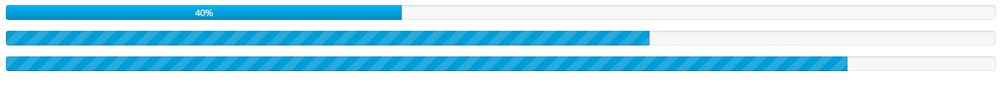

在接下来的一段时间学习看云上购买的一本Web开发实战书籍，来提升自己的软实力。
本部分为css实战部分。
进度条

进度条
创建进度条
12345678910
<div class="fan-progress fan-striped fan-active"> <div class="fan-progress-bar" style="width: 40%;">40%</div> </div> ``` 解释： 1. fan-progress为定义进度条的整体样式（背景） 2. fan-striped为定义斑纹样式（背景） 3. fan-active为定义动态进度条样式（背景） 4. fan-progress-bar为定义当前行进到样式##### 设置样式
* {
box-sizing: border-box;
}
fan-progress {
box-sizing: border-box;
height: 20px;
line-height: 20px;
background: #f7f7f7;
overflow: hidden;
box-shadow: inset 0 0 0 1px rgba(0, 0, 0, .08), inset 0 2px 2px rgba(0, 0, 0, .08);
border-radius: 4px;
}
fan-progress-bar {
width: 0;
height: 100%;
background: #009dd8;
float: left;
transition: width .6s ease;
font-size: 12px;
color: #fff;
text-align: center;
background-image: linear-gradient(to bottom, #oob4f5, #008dc5);
box-shadow: inset 0 -1px 0 rgba(0, 0, 0, .3), inset 0 0 0 1px rgba(0, 0, 0, .1);
text-shadow: 0 -1px 0 rgba(0,0,0,.2);
}
/*条纹*/
.fan-progress-striped .fan-progress-bar {
background-image:linear-gradient(-45deg,rgba(255,255,255,.15) 25%,transparent 25%,transparent 50%,rgba(255,255,255,.15) 50%,rgba(255,255,255,.15) 75%,transparent 75%,transparent);
background-size:30px 30px;
}
/*动态*/
.fan-progress-striped.fan-active .fan-progress-bar {
animation: fan-progress-active 2s linear infinite;
}
@keyframes fan-progress-active {
0% {
background-position: 0 0;
}
100% {
background-position: 30px 0;
}
}
1234567
#### 遮罩条 设计思路：1. 用一个DOM容器包图片2. 遮罩条主要以容器的伪类来创建3. 通过hover效果和css3的transition和transform完成相应动画##### 创建DOM节点
<div class="mask" data-title="遮罩条">
<img src="img/demo.png" alt="">
</div>
1
##### 设置样式
.mask {
position: relative;
width: 150px;
height: 150px;
overflow: hidden;
}
.mask:before {
content: attr(data-title);
position: absolute;
top: 100%;
left: 0;
padding: .7em 0;
width: 100%;
text-align: center;
color: #fff;
background: rgba(0,0,0,.5);
transform: translate(0, 100%);
transition: all .3s ease-in-out;
opacity: 0;
}
.mask:hover:before {
top: 80%;
transform: translate(0, 0);
opacity: 1;
}
123
#### 切角##### 创建DOM节点
<div class="box corner">单个切角</div>
<div class="box corner1">多个切角</div>
<div class="box corner2">多个园角</div>
1
##### 设置样式
.corner {
background: linear-gradient(-45deg, transparent 15px, #58a 15px);
}
.corner1 {
background: linear-gradient(135deg, transparent 15px, #58a 0) top left,
linear-gradient(-135deg, transparent 15px, #58a 0) top right,
linear-gradient(-45deg, transparent 15px, #58a 0) bottom right,
linear-gradient(45deg, transparent 15px, #58a 0) bottom left;
background-size: 50% 50%;
background-repeat: no-repeat;
}
.corner2 {
background: radial-gradient(circle at top left, transparent 15px, #58a 0) top left,
radial-gradient(circle at top right, transparent 15px, #58a 0) top right,
radial-gradient(circle at bottom right, transparent 15px, #58a 0) bottom right,
radial-gradient(circle at bottom left, transparent 15px, #58a 0) bottom left;
background-size: 50% 50%;
background-repeat: no-repeat;
}
```
参考文档